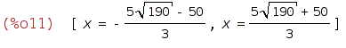

/*
wxMaxima 0.7.1 http://wxmaxima.sourceforge.net
Maxima 5.16.3 http://maxima.sourceforge.net
Using Lisp GNU Common Lisp (GCL) GCL 2.6.7 (aka GCL)
Distributed under the GNU Public License. See the file COPYING.
Dedicated to the memory of William Schelter.
The function bug_report() provides bug reporting information.
(%i1)
K(x):=1/10*x^3-5*x^2+125*x+900;
(%i2)
;
(%i3)
plot2d([K(x)], [x,0,1000],
[plot_format, gnuplot])$
(%i4)
plot2d([K(x)], [x,0,100],
[plot_format, gnuplot])$
(%i5)
plot2d([K(x)], [x,0,50],
[plot_format, gnuplot])$
(%i6)
E(x):=200*x;
(%i7)
G(x):=E(x)-K(x);
(%i8)
diff(G(x), x);
(%i9)
solve([G(x)=0], [x]);
(%i10)
plot2d([G(x)], [x,0,70],
[plot_format, gnuplot])$
(%i11)
solve([-(3*x^2)/10+10*x+75=0], [x]);

(%i12)
plot2d([-(3*x^2)/10+10*x+75], [x,0,70],
[plot_format, gnuplot])$
(%i13)